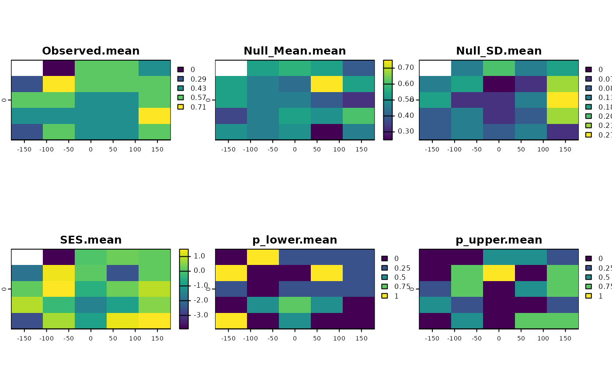
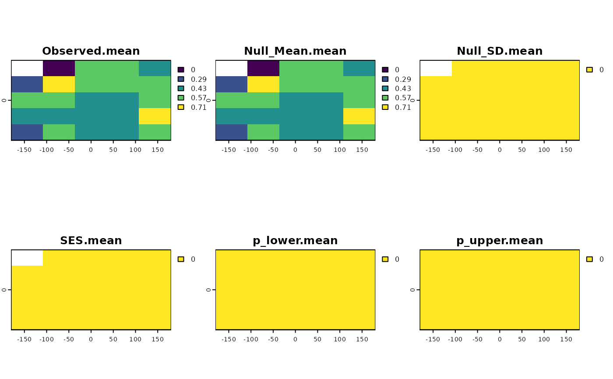
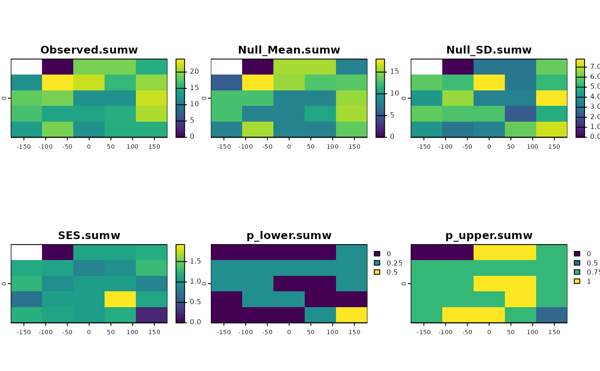
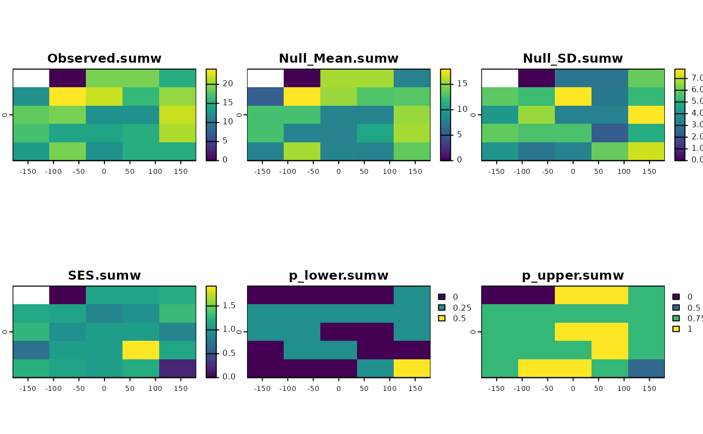

Calculates the standardized effect sizes using a custom function and a null model algorithm.
Arguments
- x
SpatRaster. A SpatRaster containing presence-absence data (0 or 1) for a set of species.
- FUN
The function to be applied. It must work with SpatRaster objects. See examples.
- FUN_args
Named list of arguments passed to the FUN
- spat_alg
A function with the algorithm implementing the desired randomization method. It must work with SpatRaster objects. See examples. Example of functions that work are:
bootspat_naive,bootspat_str,bootspat_ff.- spat_alg_args
List of arguments passed to the randomization method chosen in 'spat_alg'. See
bootspat_naive,bootspat_str,bootspat_ff- Fa_sample
Named list of length 1 with a FUN argument (e.g. a vector) to be randomized
- Fa_alg
function to randomize any non spatial argument to be passed to 'FUN'.
- Fa_alg_args
Named list of arguments passed to the function in 'Fa_alg'
- aleats
positive integer. A positive integer indicating how many times the calculation should be repeated.
- cores
positive integer. If
cores > 1, a 'parallel' package cluster with that many cores is created and used. You can also supply a cluster object. Ignored for functions that are implemented by terra in C++ (see under fun)- filename
character. Output filename
- overwrite
logical. If
TRUE,filenameis overwritten- force_wr_aleat_file
logical. Force writing bootstrapped rasters, even if files fit in memory. Mostly used for internal test units.
- ...
additional arguments passed to 'terra::app()' function.
Value
SpatRaster. The function returns the observed metric, the mean of the simulations calculated over n=aleats times, the standard deviation of the simulations, the standardized effect size (SES) for the metric defined in FUN, and p values for the upper and lower tails.
Details
Perform n=aleats spatial randomizations based on the randomization method defined in 'spat_alg' argument and calculates the metric defined in 'FUN' argument. The function (FUN) to calculate the desired metric must work with any of app, focal, focal3D family of functions.
Examples
library(SESraster)
library(terra)
#> terra 1.7.83
r <- load_ext_data()
appmean <- function(x, ...){
terra::app(x, "mean", ...)
}
ses <- SESraster(r, FUN=appmean, spat_alg = "bootspat_naive", spat_alg_args=list(random="species"),
aleats = 4)
plot(ses)

ses <- SESraster(r, FUN=appmean, spat_alg = "bootspat_naive", spat_alg_args=list(random="site"),
aleats = 4)
plot(ses)

## example of how to use 'FUN_args'
r[7][1] <- NA
plot(r)
set.seed(10)
sesNA <- SESraster(r, FUN=appmean, FUN_args = list(na.rm = FALSE),
spat_alg = "bootspat_naive", spat_alg_args=list(random = "species"),
aleats = 4)
plot(sesNA)
set.seed(10)
ses <- SESraster(r, FUN=appmean, FUN_args = list(na.rm = TRUE),
spat_alg = "bootspat_naive", spat_alg_args=list(random = "species"),
aleats = 4)
plot(ses)
 ## example with 'Fa_alg'
appsv <- function(x, lyrv, na.rm = FALSE, ...){
sumw <- function(x, lyrv, na.rm, ...){
ifelse(all(is.na(x)), NA,
sum(x*lyrv, na.rm=na.rm, ...))
}
stats::setNames(terra::app(x, sumw, lyrv = lyrv, na.rm=na.rm, ...), "sumw")
}
set.seed(10)
ses <- SESraster(r, FUN=appsv,
FUN_args = list(lyrv = seq_len(nlyr(r)), na.rm = TRUE),
Fa_sample = "lyrv",
Fa_alg = "sample", Fa_alg_args = list(replace=FALSE),
aleats = 4)
plot(ses)
set.seed(10)
ses <- SESraster(r, FUN=appsv,
FUN_args = list(lyrv = seq_len(nlyr(r)), na.rm = TRUE),
Fa_sample = "lyrv",
Fa_alg = "sample", Fa_alg_args = list(replace=TRUE),
aleats = 4)
plot(ses)

## example with 'Fa_alg'
appsv <- function(x, lyrv, na.rm = FALSE, ...){
sumw <- function(x, lyrv, na.rm, ...){
ifelse(all(is.na(x)), NA,
sum(x*lyrv, na.rm=na.rm, ...))
}
stats::setNames(terra::app(x, sumw, lyrv = lyrv, na.rm=na.rm, ...), "sumw")
}
set.seed(10)
ses <- SESraster(r, FUN=appsv,
FUN_args = list(lyrv = seq_len(nlyr(r)), na.rm = TRUE),
Fa_sample = "lyrv",
Fa_alg = "sample", Fa_alg_args = list(replace=FALSE),
aleats = 4)
plot(ses)
set.seed(10)
ses <- SESraster(r, FUN=appsv,
FUN_args = list(lyrv = seq_len(nlyr(r)), na.rm = TRUE),
Fa_sample = "lyrv",
Fa_alg = "sample", Fa_alg_args = list(replace=TRUE),
aleats = 4)
plot(ses)
